Durch richtige bauliche Gestaltung muss innerhalb des Silos die Ausbildung von Massenfluss herbeigeführt werden.
Massenfluss entsteht in Silos für Holzstaub/-späne bevorzugt dann, wenn:
Ausgangspunkt für die Abschätzung der notwendigen Lagerkapazitäten eines Silos sind die jeweiligen Zu- und Abflussmengen von Holzstaub und -spänen in das bzw. aus dem Silo. Die - im Zeitablauf entstehenden - Differenzen zwischen beiden Mengen bestimmen die notwendige Lagerkapazität und die vorgesehene Betriebsweise des Silos. Hinsichtlich der Betriebsweise werden unterschieden:
In Speichersilos kommt das Material während längerer Zeiträume zum Stillstand, d. h. es werden Holzreststoffe ohne gleichzeitige Entnahme zugeführt. Bei Silos, die eher im Durchlauf betrieben werden, finden Beschickung und Entnahme weitgehend zeitgleich statt, unterscheiden sich aber hinsichtlich der jeweiligen Mengen. Zeiten mit größerem Mengenzufluss und Zeiten mit größerem Mengenabfluss wechseln sich ab. Das notwendige Lagervolumen wird durch die maximale Differenz zwischen Beschickungs- und Entnahmemenge bestimmt.
Speichersilos verhalten sich gegenüber der Brücken- und Stockbildung im Allgemeinen wesentlich empfindlicher als Puffersilos. Bei der Planung und Auslegung von Speichersilos sind daher in besonderem Maße Überlegungen zur Gestaltung des Späne-Lagerraumes (siehe Abschnitt 5.3) erforderlich.
Holzreste entstehen in einem holzbearbeitenden oder -verarbeitenden Betrieb, von produktionsbedingten Schwankungen abgesehen, etwa gleichmäßig über das ganze Jahr verteilt.
Die dabei als Zufluss in das Silo entstehenden Mengen hängen von der insgesamt im Betrieb verarbeiteten Holzmenge (abschätzbar über die Holzeinkaufmenge), dem fertigungsbedingten Verschnitt und der Behandlung von im Produktionsprozess nicht zerspanten Holzresten ab (z. B. nachträgliche Zerkleinerung in Hackmaschinen).
Die Entnahmemengen unterscheiden sich dagegen sowohl vom Umfang als auch vom zeitlichen Bedarf hauptsächlich bei der vorgesehenen Verwendung der anfallenden Holzreste. Finden diese als Ausgangsstoffe für die Holzwerkstoffherstellung oder für die Herstellung von Wärmeträgern aus Holz (Briketts oder Pellets) Verwendung, erfolgt die Entnahme in der Regel relativ gleichmäßig hinsichtlich Menge und Zeit. Das Silo hat hier vor allem Pufferfunktion.
Bei der thermischen Nutzung der gelagerten Holzreste muss unterschieden werden, ob die angeschlossene Feuerung nur Heizwärme in der kalten Jahreszeit liefern oder ob von dieser auch notwendige Prozesswärme (z. B. für die Holztrocknung), die unabhängig von den herrschenden Außentemperaturen benötigt wird, geliefert werden soll. In diesem Fall findet ebenfalls eine im Zeitverlauf durchgehende Entnahme aus dem Silo statt, wenn auch mit geringerem mengenmäßigen Durchsatz. Die Betriebsweise des Silos – und damit die spezifischen Fließeigenschaften innerhalb des Silos – liegt in diesen Fällen zwischen denen des Puffersilos und des Speichersilos.
In den meisten handwerklichen Holzbearbeitungsbetrieben wird die aus der thermischen Nutzung gewonnene Wärme vor allem in den Wintermonaten benötigt. Da sich Anfall und Verbrauch des Brennmaterials zeitlich nicht decken, bilden sich im Sommerhalbjahr Überschüsse. Dagegen ist im Winter ein erhöhter Bedarf zu berücksichtigen (siehe Abb. 5.1). Die Betriebsweise entspricht in diesen Fällen derjenigen des typischen Speichersilos.
Das Silo wird in Schreinereien/Tischlereien üblicherweise so dimensioniert, dass die Lagerkapazität für mindestens 50 % des jährlich erforderlichen Brennstoffvolumens ausreicht. Ist das Silo zu klein bemessen, müssen im Sommer anfallende Späne entsorgt und im Winter muss Brennmaterial zugekauft werden.
Beim Neubau eines Silos sollten Kapazitätsreserven für mögliche Produktionsumstellungen und Betriebserweiterungen berücksichtigt werden. Andererseits sollten die Lagerkapazitäten den Brennstoffbedarf nicht überschreiten, damit die Verweilzeit des Holzstaub/-späne-Gemisches im Silo nicht zu groß und so die Bildung von Späne-Stöcken und Späne-Brücken begünstigt wird. Für Reservekapazitäten und die aus betrieblichen Gründen von Späne-Material frei zu haltenden Volumenbereiche eines Silos (Einblas- und Absetzraum, Druck entlastungsraum) wird bei der Ermittlung des notwendigen Siloleervolumens üblicherweise ein Zuschlag von 25 % berücksichtigt (siehe Tabelle 5.1).
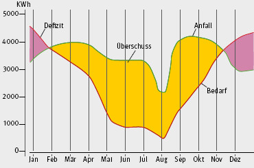
Abb. 5.1 Vergleichsdiagramm von Wärmebedarf und Brennstoffanfall am Beispiel eines holzverarbeitenden Betriebes
In Abhängigkeit von der Nennwärmeleistung der Feuerung (Wärmebedarf) kann der Brennstoffjahresbedarf, die benötigte Späne-Lagerkapazität und das hieraus abgeleitete notwendige Siloleervolumen für handwerkliche Schreinereien/Tischlereien, wie in Tabelle 5.1 dargestellt, abgeschätzt werden. Bei den in der Tabelle angegebenen Werten wurden für den Brennstoffjahresbedarf folgende Annahmen zugrunde gelegt:
Im Anhang 2 ist ein Beispiel für die Ermittlung der notwendigen Späne-Lagerkapazität im Falle mehrerer Energieträger und/ oder unregelmäßigen Anfalls von Staub und Spänen gegeben.
Bei der Dimensionierung von Silos müssen u. a. folgende Belastungen berücksichtigt werden:
Im Regelfall sind diese Anforderungen nur mit Silos aus Ortbeton, Betonfertigteilen oder Stahlblech zu erfüllen. Gemauerte Silos erfüllen die Anforderungen gegen Auswirkungen von Explosionen nicht, da Horizontalkräfte nur über den Fugenmörtel übertragen werden können. Silos aus Holz sind brennbar und erfüllen ebenfalls nicht die Anforderungen an den Explosionsschutz. Stahlblechsilos bleiben im Brandfall meistens nicht formstabil und erfüllen somit nicht die Anforderungen an die Feuerbeständigkeit. Daraus ergibt sich, dass Silos aus Stahlblech nur in größerem Abstand zu anderen Gebäuden aufgestellt werden können, wenn keine anderen Maßnahmen getroffen worden sind (siehe Abschnitt 5.5).
Da für Silos eine Baugenehmigung erforderlich ist, müssen der Festigkeitsnachweis über die Vorlage einer geprüften Statik und die Brandeigenschaften über einen Brandschutznachweis geführt werden. Weitere Eigenschaften, wie die Explosionsfestigkeit oder das Emissionsverhalten hinsichtlich Lärm und/ oder Staub müssen gegebenenfalls über gesonderte gutachterliche Nachweise geführt werden.
| Brennstoffjahresbedarf (m3) = | Nenn-Wärmeleistung der Feuerung (KW) x Volllaststunden (h) |
| Wirkungsgrad (%) x unterer Heizwert (KWh/Kg) x Schüttgewicht (kg/m3) |
| Nennleistung in KW | 50 | 75 | 100 | 150 | 200 | 300 | 500 | 750 | 1000 |
| Brennstoffjahresbedarf in m3 | 110 | 170 | 230 | 340 | 450 | 670 | 1.120 | 1.670 | 2.220 |
| Benötigte Späne-Lagerkapazität in m3 | 55 | 85 | 115 | 170 | 225 | 335 | 560 | 835 | 1.110 |
| Siloleervolumen in m3 | 70 | 110 | 150 | 220 | 290 | 420 | 700 | 1.050 | 1.400 |
Tabelle 5.1 Brennstoffjahresbedarf, Späne-Lagerkapazität und Siloleervolumen in Abhängigkeit vom Wärmebedarf
Generell - insbesondere bei Silos mit geringeren Innendurchmessern, die als Speichersilos betrieben werden - sollten die Innenwände möglichst glatt ausgeführt werden, z. B. durch Aufbringen von Beschichtungen oder von Innenputz. Absätze, Gesimse und ähnliche Vorsprünge sollten bei Speichersilos möglichst vermieden werden.
Ausnahmefall: Beim Betreiben von Silos mit größeren Innendurchmessern, die gleichzeitig im Durchlaufbetrieb stehen, ist die Gefahr einer Fließstörung durch Brückenbildung eher gering. Hier kann eine höhere Wandrauigkeit sogar eher von Vorteil sein, da so der Verdichtung des gelagerten Materials entgegengewirkt wird. Allerdings besteht im Winter das Problem des Festfrierens an rauen Wänden, wenn feuchtes Material gelagert wird.
Um Stauungen und Brückenbildungen zu vermeiden, dürfen Podeste, Steigeisengänge, Leitern und ähnliches, Rohrleitungen von Sprühwasserlöschanlagen, elektrische Leitungen und sonstige Leitungen grundsätzlich nicht innerhalb des Spänelagerraumes angeordnet sein. Dagegen kann unter bestimmten Umständen bei Durchlaufsilos mit größeren Innendurchmessern zur Verminderung von Verdichtungseffekten im Material auch der bewusste Einbau von sogenannten Entlastungskeilen sinnvoll sein.
Runde Silos haben gegenüber eckigen Silos u. a. folgende Vorteile:
Rechteckige Silogrundrisse erfordern für einen störungsarmen Betrieb aufwändigere Austragsysteme. Zur Vermeidung von toten Ecken müssen z. B. Schubbodenaustragungen vorgesehen werden (siehe Abschnitt 6).
Der Querschnitt des Silos muss entweder gleichbleibend sein oder sich mit steigender Silohöhe verringern.
Silos mit im Verhältnis zum Durchmesser geringen Füllhöhen begünstigen eine Bildung von Späne-Brücken und Späne-Stöcken weniger als hohe Silos. Das vernünftige Verhältnis Länge/Durchmesser (L/D) des Silobaukörpers hängt vom gelagerten Material, dessen Feuchte und der Verweildauer im Silo ab und sollte generell nicht größer als 2,5 sein. Dies entspricht nach Abzug des Schüttkegels einer Füllhöhe H von höchstens dem zweifachen Silo-Innendurchmesser.
Als Anhaltswerte für die maximale Füllhöhe und das Füllhöhe/ Durchmesser-Verhältnis (H/D) können erfahrungsgemäß folgende Werte angesehen werden:
| Gelagertes Späne-Material besteht aus: | Max. Füllhöhe H | Max. H/D |
| Altholz, Recyclingholz | ≤ 16 m | 1,25 |
| feuchtes Material (Holzfeuchte > 15 %) | ≤ 16 m | 1,25 |
| trockenes Material (Holzfeuchte ≤ 15 %) | > 16 m | 2,00 |
Für die Ermittlung der Bauhöhe des Silos muss neben der konzipierten Füllhöhe noch der Platzbedarf für die Explosionsdruckentlastungstechnik und die Material-Einbringungstechnik berücksichtigt werden.
Die Späne-Lagerfläche muss nach DIN EN 12779 oberhalb des Erdbodens (Gelände) angeordnet sein.
Neue Siloanlagen für Holzstaub und -späne sollten – wo immer möglich – im Freien und von allen Seiten zugänglich aufgestellt sein.
Darüber hinaus müssen Zufahrtswege für schwere LKW (z. B. Feuerwehr, Späne-Entsorgung auch bei Notentleerung) vorgesehen werden.
Bei der Aufstellung müssen die vorgeschriebenen Emissionswerte (z. B. Lärm, Staub) an den Grundstücksgrenzen eingehalten werden.
Beim Betrieb von Silos für Holzstaub und -späne bestehen Brand- und Explosionsrisiken. Deshalb müssen bei der Standortwahl folgende Dinge berücksichtigt werden:
Alle nachfolgend angegebenen Abstände sind Richtwerte. Die für die Baugenehmigung zuständige Behörde kann im Einzelfall andere Abstände zulassen oder festlegen.
Bei Unterschreitung des Sicherheitsabstandes gilt:
entweder
oder
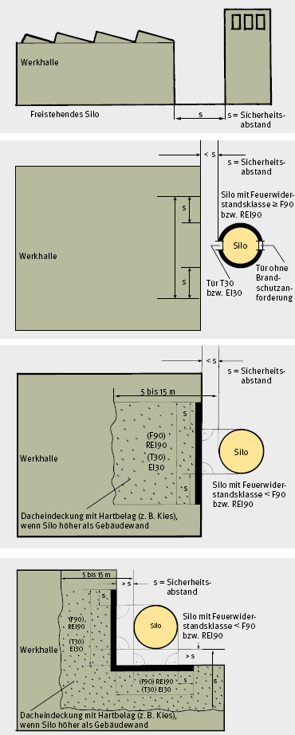
Abb. 5.2 Abstände zwischen Gebäude und Silo
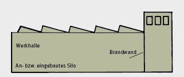
Abb. 5.3 Angebautes Silo
Für einen sicheren Betrieb, eine sichere Kontrolle, eine sichere Wartung und zur Entnahme von Spänen im Störungsfall sind Öffnungen in Wänden und Decken erforderlich, z. B.:
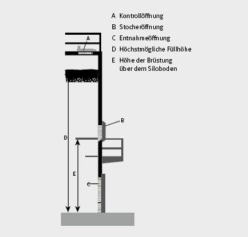
Abb. 5.4 Korrekte Anordnung der Entnahme- und Stocheröffnungen
Für alle Öffnungen gelten folgende Mindestanforderungen:
| Minimale Größe der Öffnungen | Minimale Größe der Arbeitsbühnen | |||
| Höhe h [m] |
Breite w [m] |
Breite w [m] |
Tiefe d [m] |
|
| Zugangsöffnung (Tür) | 1,8a) | 0,9 bis 1,1b) | Die Arbeitsbühne muss so groß sein, dass die Tür bzw. Klappe bei Umsteigebühnen oder Wechselpodesten um 180 ° und bei einfachen Podesten um 90 ° aufzuschlagen ist. Der Abstand der Tür- bzw. Klappenkante zu allen festen Gegenständen muss mindestens 20 cm betragen. | |
| Kontrollöffnung für Füllstand | 0,6 | 0,6 | ||
| Öffnung zum Anbringen eines Notaustragsystems | c) | c) | ||
| a) Zulässig mit maximal 10 cm Türschwelle. b) Die Breite von 0,90 m gilt für Silodurchmesser ≤ 7,5 m und die Breite von 1,10 m für Silodurchmesser > 7,5 m. c) Die Größe der Öffnung zum Anbau eines Notaustragsystems und deren Position in der Silowand müssen entsprechend den Anforderungen des Herstellers des Notaustragsystems gewählt werden. |
||||
Tabelle 5.2 Mindestabmessungen von Öffnungen in der Silowand und Arbeitsbühnen vor diesen Öffnungen
Das Silo muss im unteren Bereich direkt von außen zugänglich sein.
Zugänge sind mindestens auf Niveau des Silobodens, Kontrollöffnungen mindestens oberhalb des maximalen Füllstandes vorzusehen. Zugänge in der Nähe des Silobodens sind immer als Türen ausführen.
Türen zum Begehen des Silos sollten so groß wie möglich sein, um einen ungehinderten Zugang zur Austragung zu gewährleisten.
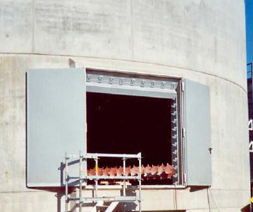
Abb. 5.5 Zugang zum Siloboden über doppelflügelige Zugangstür
An den Zugängen sind das Verbotszeichen „Feuer, offenes Licht und Rauchen verboten“, das Warnzeichen „Warnung vor explosionsfähiger Atmosphäre“ sowie das Verbotszeichen „Zutritt für Unbefugte verboten“ anzubringen.
Abb. 5.6 Verbotszeichen an Silozugängen
Wenn bei Bestandssilos eine Einfahröffnung vorhanden ist, ist im Bereich dieser Einfahröffnungen das folgende blaue Hinweisschild anzubringen:
Abb. 5.7 Hinweisschild an Silotüren
Türen oder Klappen als Zugang zu mechanischen Austrageinrichtungen müssen so mit dem Antrieb der Austrageinrichtung verriegelt werden, dass beim Öffnen der Antrieb der Austrageinrichtung zwangsläufig stillgesetzt wird. Dieser darf dabei durch die Brennstoffanforderung einer Feuerungsanlage nicht wieder eingeschaltet werden können. Für Kontrollzwecke darf der Antrieb bei geöffneter Tür mit einem Schalter ohne Selbsthaltung, der außerhalb des Silos angebracht sein muss, eingeschaltet werden können. (Ausführliche Beschreibung der Anforderungen siehe Abschnitt 6 „Zugangssicherung“).
Zugleich mit dem Antrieb der Austrageinrichtung aus dem Silo muss auch der Antrieb der Materialzuführung in das Silo stillgesetzt werden.
An Türen und seitlichen Klappen müssen Absturzsicherungen zum Inneren des Silos vorhanden sein.
Vor Türen in Höhen von mehr als 1 m über dem Boden müssen die Arbeitsbühnen so groß sein, dass die Türblätter oder Klappen im Falle von Wechselpodesten um 180 ° und bei einfachen Podesten um 90 ° aufzuschlagen sind. Der Abstand der Türblatt- bzw. Klappenkanten zu allen festen Gegenständen muss mindestens 0,20 m betragen. Es wird aber dringend empfohlen, größere Grundflächen für die Arbeitsbühnen vorzusehen (mindestens in den Abmessungen 2,60 m x 1,80 m), um das vollständige Öffnen der Türen zu ermöglichen und für Arbeiten im Bereich dieser Öffnungen, z. B. bei der Entnahme von Spänen mit Saugschläuchen, genügend Standfläche zu haben.
Müssen Türen und seitliche Klappen bei anstehendem Späne gut geöffnet werden (z. B. vor Revisionsöffnungen oder im Bereich der Austragung), müssen bei Silo-Neubauten in den Öffnungen schräg nach innen geneigte und nach oben ausziehbare Jalousiebretter oder ähnliche Sicherungen vorhanden sein, um das Ausfließen des Späne-Gutes einzuschränken und den Materialdruck von Türen und Klappen fernzuhalten. Dies gilt insbesondere für Durchlaufsilos, wenn darin besonders trockenes Staub- und Späne-Material (zwischen)gelagert wird.
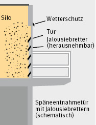
Abb. 5.8 Späne-Entnahmeöffnung mit Jalousiebrettern
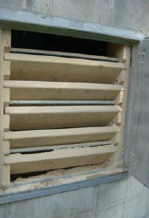
Abb.5.9 Späne-Entnahmeöffnung mit Jalousiebrettern
Für Silo-Neubauten ist diese Lösung nicht mehr zulässig; die DIN EN 12 779:2013 lässt – mit Ausnahme an der unteren Zugangstür – nur Öffnungen mit einer Höhe der Unterkante von 1,00 m über Plattformniveau zu.
Über die gesamte Höhe des Silos müssen ausreichend viele Öffnungen vorgesehen werden, z. B. Revisionsöffnungen im senkrechten Abstand von höchstens 6,00 m. übereinander. Diese Öffnungen müssen direkt über den Zugangstüren auf Silobodenniveau angeordnet werden.
Sonstige Öffnungen können notwendig werden z. B.:
Die Größe und Ausstattung mit Podesten und Sicherungen gegen Absturz muss bei diesen Öffnungen im Einzelfall mit der Lieferfirma der Einrichtung bzw. dem vorgesehenen Dienstleistungsunternehmen für diese Arbeiten abgestimmt werden.
Dachflächen, Decken und Arbeitsbühnen von Silos, die betreten werden sollen, müssen mit sicheren Zugängen oder Aufstiegen ausgerüstet sein, zum Beispiel fest angebrachte Steigleitern mit Rückenschutz nach der Arbeitsstättenrichtlinie ASR 1.8, Nr. 4.6.
Wenn die Höhe des Leiterlaufes mehr als 5 m beträgt, ist an den Steigleitern ein durchgehender Rückenschutz als Absturzsicherung notwendig. Der untere Teil des Rückenschutzes, z. B. der untere Rückenschutzbügel, muss in einer Höhe zwischen 2,20 m und 3,00 m über der Einstiegsfläche beginnen.
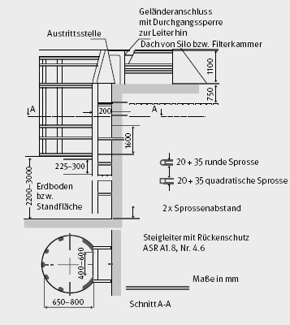
Abb. 5.10 Steigleiter nach ASR 1.8, Nr. 4.6
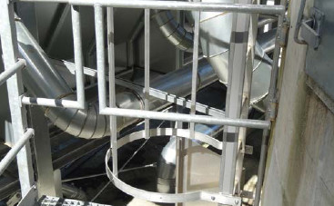
Abb. 5.11 Steigleiter nach ASR 1.8, Nr. 4.6
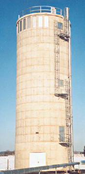
Abb. 5.12 Steigleiteraufstieg mit Wechselpodesten
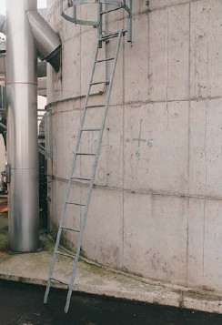
Abb. 5.13 Steigleiterzugang mit einhängbarer Anlegeleiter
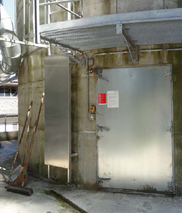
Abb. 5.14 Sicherung des Steigleiterzuganges Anlegeleiter mit einhängbarer und abschließbarar Blechtafel
Bei einer Leiterhöhe von mehr als 10 m müssen Ruhebühnen vorhanden sein. Die Ruhepodeste sollen jeweils bei den erforderlichen Revisionsöffnungen – also alle 6 m – vorgesehen werden. Die Leitern sollen so angeordnet werden, dass sie auf einer Seite zum Podest hochführen und der weitere Aufstieg von der anderen Seite des Podestes (sogenannte(s) Umsteigbühne oder Wechselpodest) aus erfolgt. Herunterklappbare Ruhepodeste sind zu vermeiden.
Aufstiege oder Zugänge sind gegen unbefugten Aufstieg zu sichern, z. B. mit einhängbaren, ca. 2 – 3 m langen Anlegeleitern anstelle einer bis zum Boden führenden Steigleiter oder über abschließbare Ausstiegs-Verhinderer.
Betretbare Dachflächen sind mit einem mindestens dreiteiligen Geländer – bestehend aus Handlauf, Knieleiste(n) und Fussleiste – mit mindestens 1,10 m Höhe gegen Absturz von Personen zu sichern.
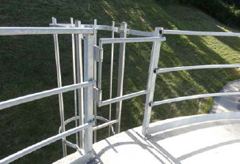
Abb. 5.15 Silodach mit Absturzsicherung und sicherheitsgerechter Ausführung des Leiterausstieges
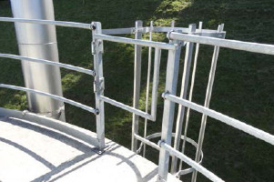
Abb. 5.16 Silodach mit Absturzsicherung und sicherheitsgerechter Ausführung des Leiterausstieges
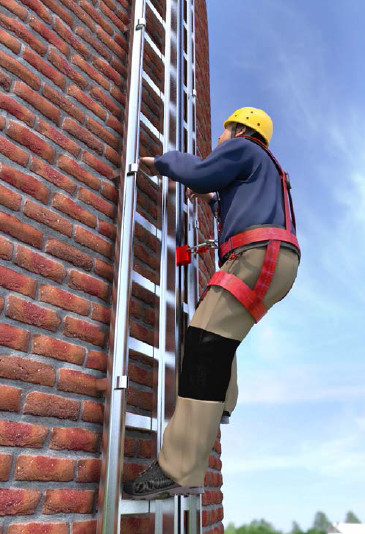
Abb. 5.17 Steigleiter mit Steigschutz und deren Verwendung
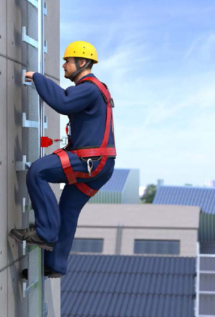
Abb. 5.18 Steigleiter mit Steigschutz und deren Verwendung
Alternativ zu Steigleitern mit Rückenschutz können auch Steigleitern mit Steigschutz Verwendung finden. Solche Leitern haben gegenüber der Ausführung mit Rückenschutz den Vorteil, dass der Aufstieg erleichtert wird und eine evtl. erforderliche Rettung von Personen aus großen Höhen leichter möglich wird. Das Anfügen und Lösen der Steigschutzeinrichtung muss von einem gesicherten Standplatz erfolgen.
Allerdings muss die steigende Person beim Besteigen Persönliche Schutzausrüstung gegen Absturz (PSAgA) verwenden.
Geeignete PSAgA sind in diesem Fall ein zur Führung der Steigschutzeinrichtung zugeordnetes Auffanggerät und ein Auffanggurt nach DIN EN 361 mit vorderer Auffangöse bzw. Steigschutzöse.